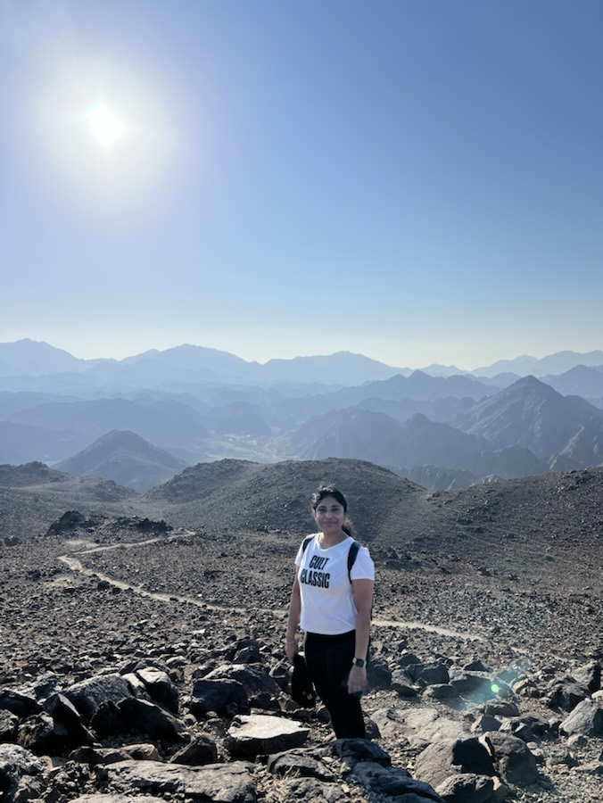
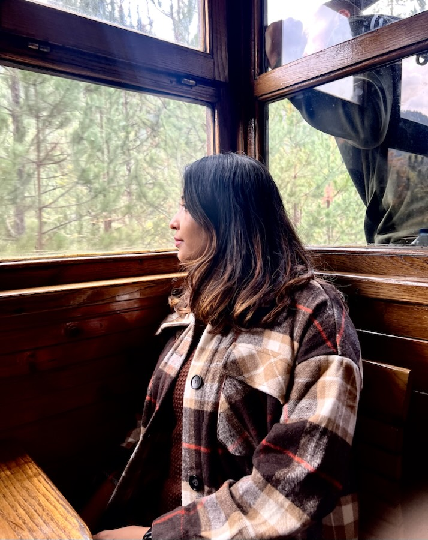
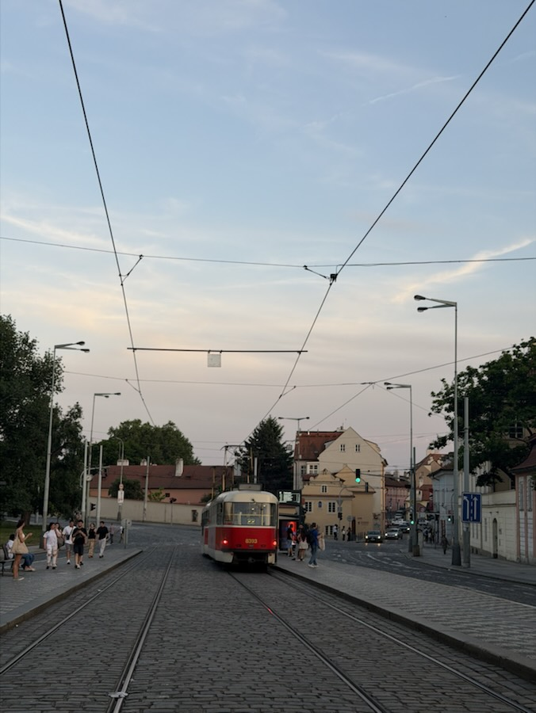
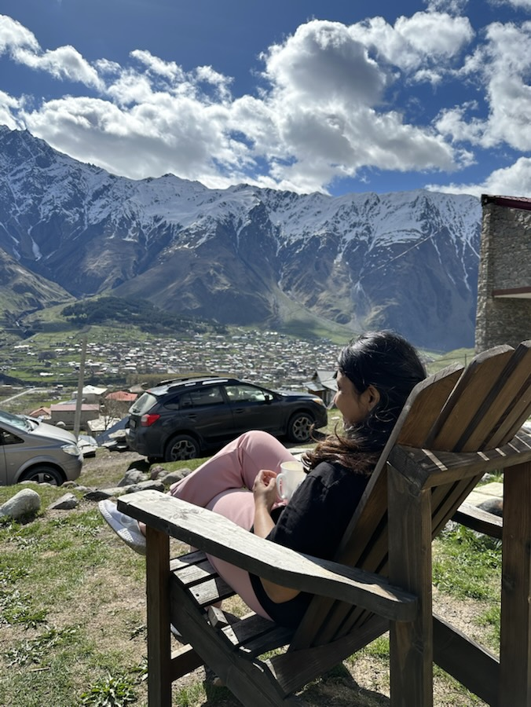

What all I do
- 01Product design
- 02UX research
- 03Design systems
- 04Prototyping
- 05AI-native workflows
a product designer
I'm a Senior Product Designer based in Dubai, with 4+ years of designing products end to end, from the first research call to the final shipped screen.
Before design, I trained as a dentist. That clinical background shaped how I work: listen first, explain clearly, and earn trust at every step. It's why I love fintech, health-tech and AI-native products, where clarity really matters.
I've built and led a design team from scratch, been the sole designer at an early-stage startup, and shipped across mobile apps, kiosks, web platforms and client portals.
When I'm not designing, I'm probably travelling, baking, overthinking, watching a sunset, hiking, trying new side quests, working out and living life to the fullest!
through my lens /
Sunsets, side quests and places I've wandered. Hover to take a closer look ✿










